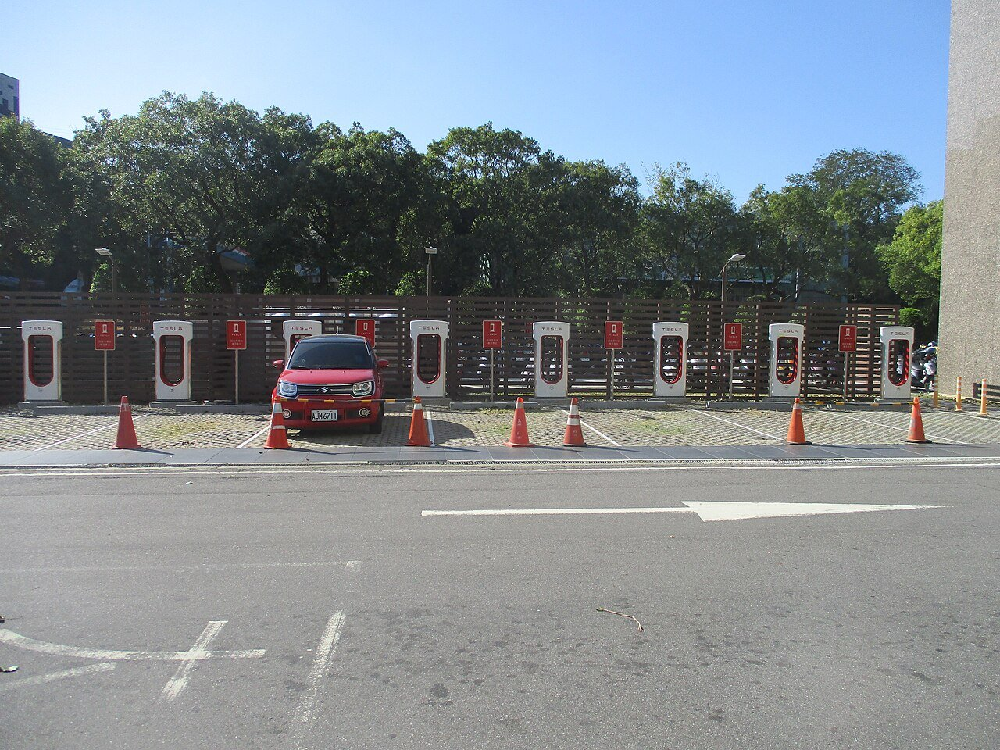

新聞不報、但你天天要查的生活大小事
停水停電、菜價、裝修報價、長輩手機問題……官方都有公布，卻散在十幾個網站、格式又難查。先搜尋看看，你要查的可能已經整理好了。

🗺️ 國家資訊地圖
步道開放／封鎖、停電、停水，一張地圖直接查結果——政府公開資訊分門別類標在地圖上，圖層可勾選、可複選，點標記就看得到狀態與摘要，不用再轉到政府網站慢慢翻。手機打開就能用，之後 App 也會用同一張圖。
頻道總覽
已上線🏠
居家裝修
報價單、施工流程、材料與合約——裝修前先做功課，不怕被當盤子。
 已上線
已上線💧
民生查詢
停水停電、菜價行情、垃圾車時間——官方資訊分散難查，我們幫你整理成一頁。
 已上線
已上線👨👩👧
親子學習
兒童線上英文怎麼挑——師資、教材、價格、退費，先看懂各家規則再決定，不當冤大頭。
籌備中
👵
銀髮 3C
長輩手機教學、防詐騙——字大、步驟清楚，子女也能直接傳給爸媽看。
 籌備中
籌備中🏥
健康查詢
假日夜間看診、藥局營業時間——急著找醫生時不用再一間一間打電話。
 籌備中
籌備中📚
學習考照
技術士考照刷題與考試資訊——公開題庫整理好，照著練就對了。
籌備中
🤖
AI 工具
免費 AI 工具實測——文書、圖片、簡報，哪些真的好用，我們試給你看。

籌備中🚗
愛車生活
驗車、稅金、保險到期提醒——車子的例行大事，不再靠記憶。
最新整理

居家裝修
裝修報價單怎麼看？先搞懂這 5 件事

居家裝修
設計師怎麼挑？從丈量到簽約的檢查清單

居家裝修
系統櫃怎麼計價？一尺多少錢才合理

居家裝修
裝修施工流程順序：為什麼不能跳著做

居家裝修
裝修合約注意事項：簽下去之前逐條檢查
民生查詢
國家資訊地圖：步道開放、停電、停水一張圖查完
民生查詢
停水停電查詢

民生查詢
菜價行情查詢

民生查詢
垃圾車時間查詢

親子學習
兒童線上英文怎麼挑？6 家平台對照表一次看懂

親子學習
OiKID vs TutorABC Junior：兩家差在哪、適合誰

親子學習
兒童線上英文價格與退費規則整理

親子學習
兒童線上英文家長常見問題 FAQ
這個站怎麼來的
好康生活是 好康網 的姊妹站。我們發現：大家每天 Google 的問題，一大半不是「哪裡便宜」，而是「這件事到底怎麼辦」。所以我們把這些題目分門別類做成功課與查詢工具，慢慢補齊每一個頻道——先求正確、好查，再求多。